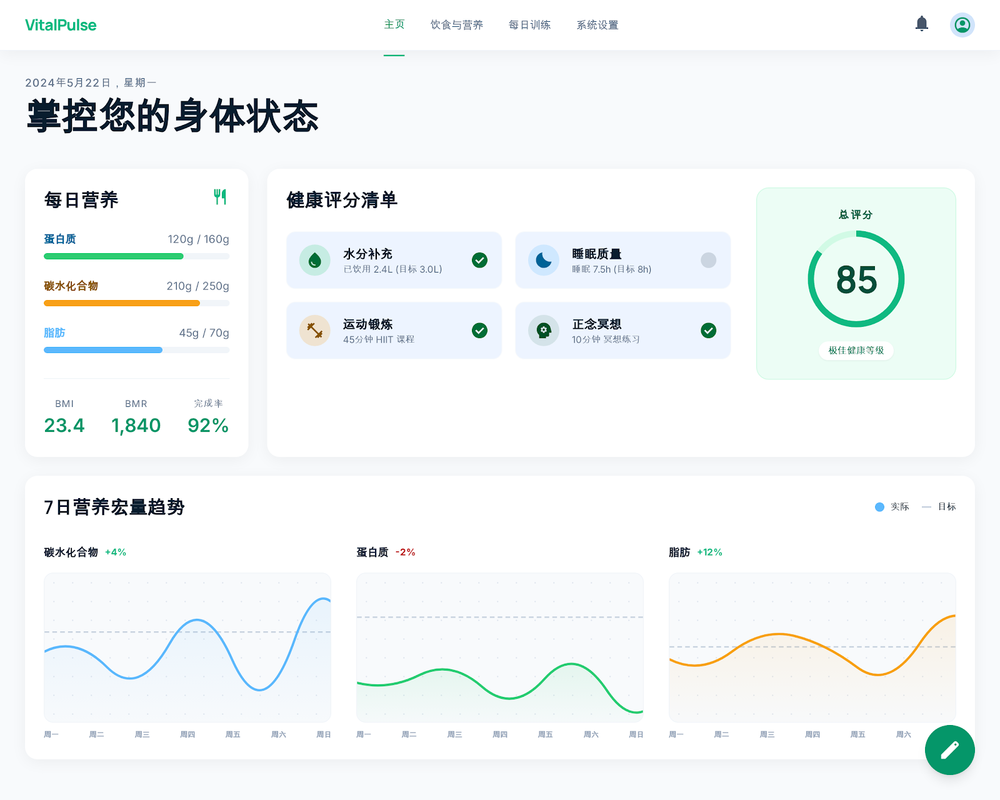
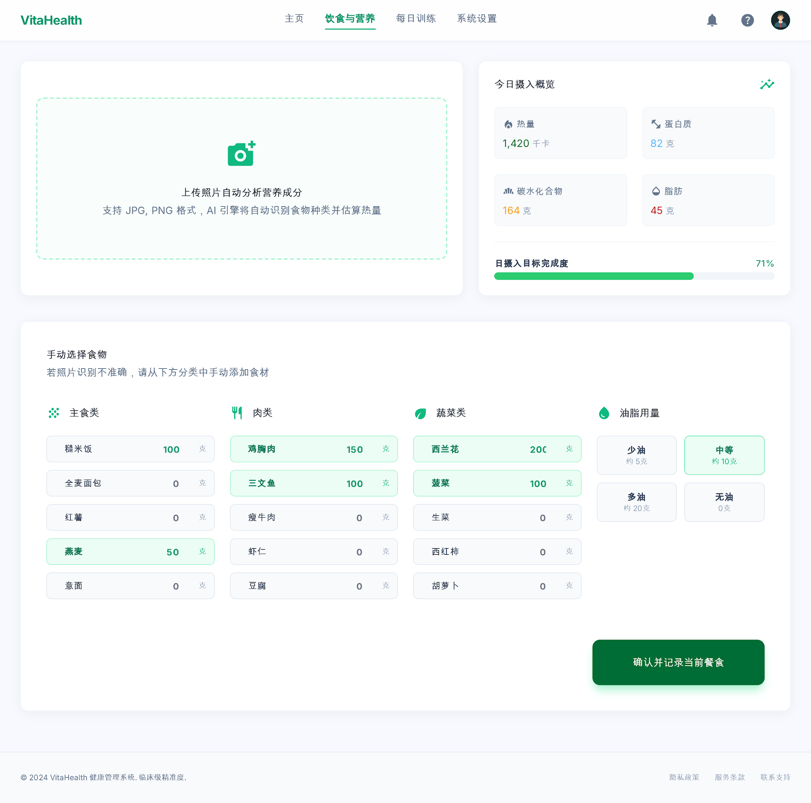
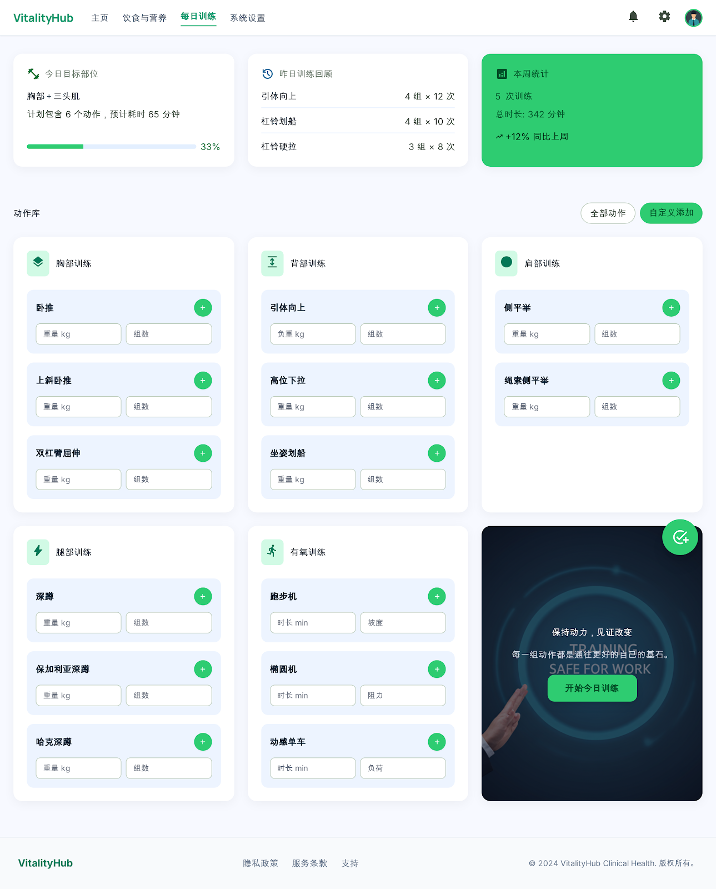
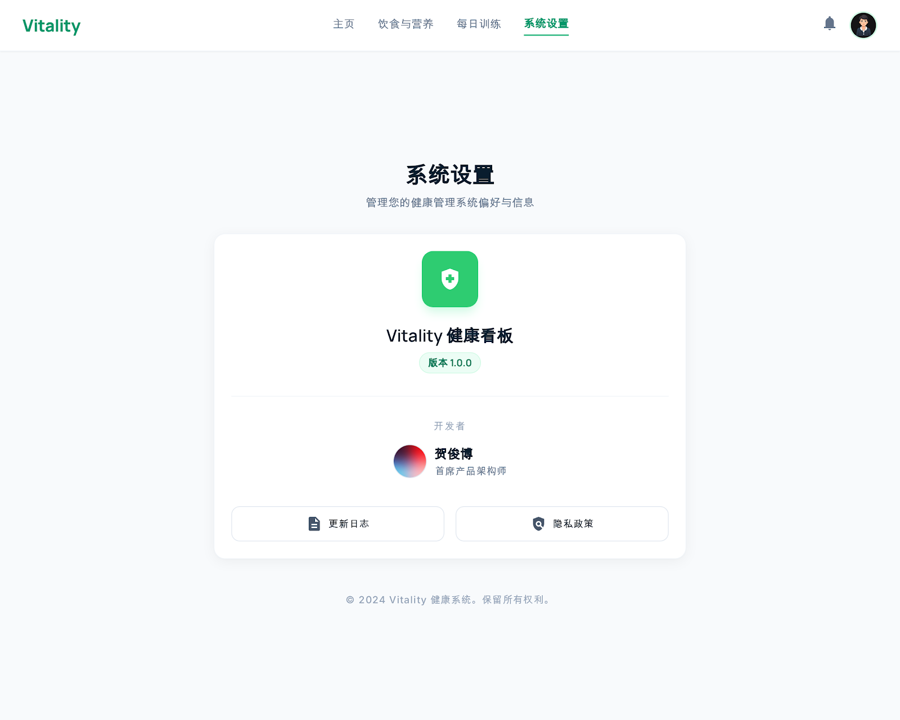

用户价值
30 秒
通过预设食物、油脂选项和动作库降低记录成本，让用户每天能快速完成关键数据输入。
Local-first Health Tracker
这是一个本地优先的健康管理 Web 原型，围绕注册登录、生成个性化计划、记录饮食、 记录训练、查看健康评分组成最小可用闭环。此页面把项目中的实际界面截图、模块关系和 当前实现状态整理成一个可直接在浏览器打开的展示站点。

Overview
项目的核心目标是把日常健康行为从分散记录变成一个可见闭环：先建立个人身体目标， 再持续记录饮食和训练，最后用仪表盘把投入转化为清晰反馈。
30 秒
通过预设食物、油脂选项和动作库降低记录成本，让用户每天能快速完成关键数据输入。
本地优先
当前运行应用位于 my-app/，默认使用本地 SQLite 保存健康数据。
5 步
注册登录、生成计划、记录饮食、记录训练、查看健康评分与趋势。
Flow
下面这条链路对应当前代码已经实现的主路径。PRD 中提到的验证码和 AI 拍照识别在当前版本中尚未完整落地。
用户注册后会进入不可跳过的计划弹窗；没有档案时，仪表盘和饮食页会提示先完成个性化计划。
饮食页保存餐食会更新今日摄入；训练页保存 session 会自动同步运动打卡。
仪表盘计算 BMI、BMR、TDEE、营养目标完成度、健康评分和最近 7 天宏量营养趋势。
Modules
点击任意截图可以放大查看。这里使用仓库中已有的真实截图，不是重新绘制的占位图。
Dashboard
仪表盘是项目的结果页，负责把用户当天的身体指标、饮食进度、运动情况和健康评分统一展示。

Nutrition
当前代码主链路以手动录入为准：用户从预设食物分类中选择食物、填写克数、选择油脂用量并保存当前餐食。
Training
训练模块围绕动作库和今日训练清单工作。用户按部位筛选动作，设置重量、组数、次数或有氧时长，再统一提交。


Settings
设置页当前主要是信息展示和退出入口，是后续本地数据说明、备份导出、隐私策略等能力的承载位置。
Auth & Onboarding
注册和登录采用手机号加密码。注册成功后，用户必须完成个人计划，系统据此生成每日营养目标和身体指标。
POST /api/auth/register：创建账号，返回 access token 和 refresh token。POST /api/auth/login：校验密码，失败次数过多会临时锁定账号。POST /api/auth/refresh：刷新 access token。POST /api/auth/logout：清理会话。API & Data
项目采用 Next.js App Router，把页面与 API Routes 放在同一应用中；服务端逻辑集中在
my-app/src/lib/server，数据通过 Prisma 写入 SQLite。
GET /api/dashboard：聚合身体指标、营养、训练、清单与趋势。HealthScore。GET /api/nutrition/today：今日摄入、剩余热量和餐食列表。GET /api/nutrition/food-categories：系统预设食物。POST /api/nutrition/meals：保存餐食。DELETE /api/nutrition/meals/[id]：删除餐食。GET /api/training/exercises：系统动作库。POST /api/training/quick-log：快速记录训练。GET /api/training/today：今日训练明细。GET /api/training/weekly-stats：本周训练统计。User、UserProfile、RefreshToken。DailyNutrition、MealRecord、MealFood。WorkoutRecord、训练动作与分类表。HealthChecklist、HealthScore。Project Status
这一块适合给评审、同学或协作者快速说明：哪些已经可以演示，哪些只是规划或半成品。